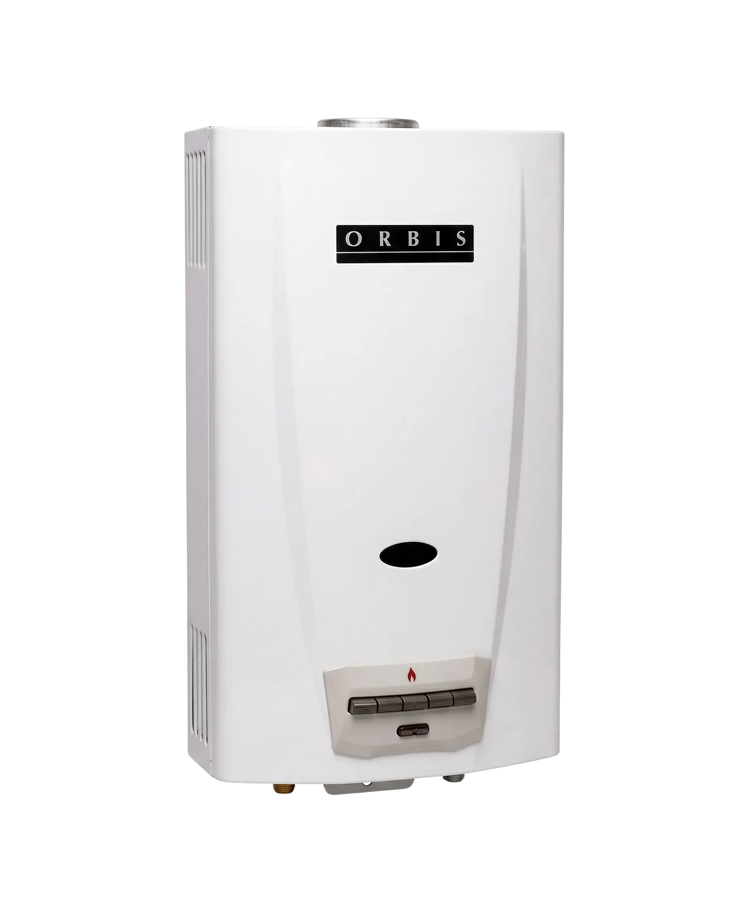
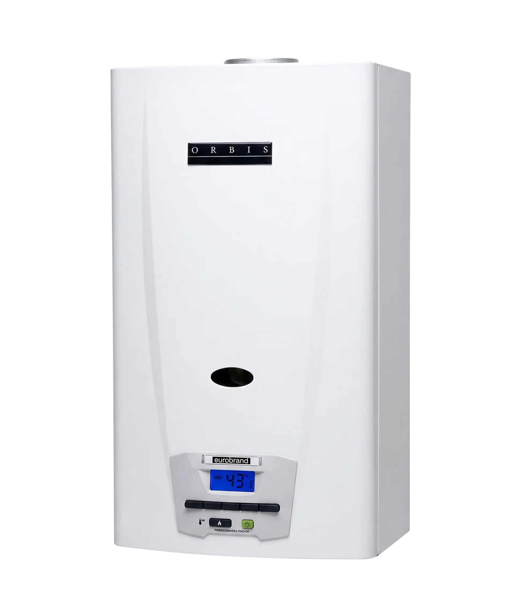
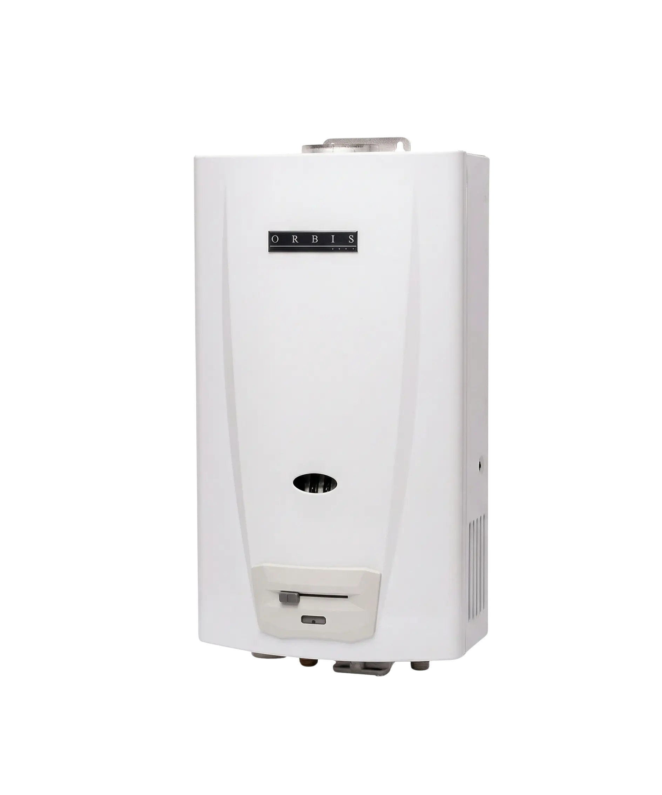
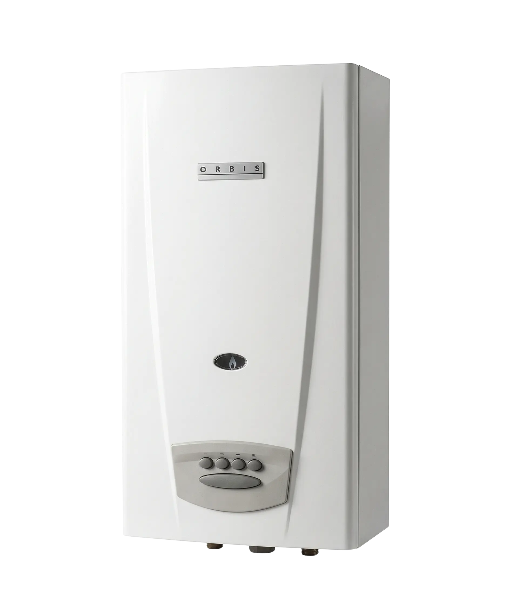

Asistencia técnica profesional para que no te falte el agua caliente. Técnicos especialistas y atención en el día.
No solo reparamos equipos, cuidamos el confort de tu hogar. Nacimos para dar respuesta a la creciente demanda de un servicio técnico honesto y profesional en la ciudad. En estos más de 2 años, hemos solucionado cientos de casos en el Casco Urbano. Nos especializamos en la complejidad de los calefones modernos y la robustez de los tradicionales. Nuestra prioridad es que no vuelvas a preocuparte por el agua fría, ofreciendo un trato directo, sin intermediarios y con la responsabilidad que nos caracteriza como técnicos platenses.
Coordinamos visitas con tiempos cumplibles. Tu tiempo vale.
Explicamos el proceso y el presupuesto antes de empezar.
Revisamos la evacuación de gases en cada visita. Sin riesgos.

MODELOS KNO

MODELOS KSO

MODELOS KJO

MODELOS BLO
Si tu modelo de calefón Orbis no aparece en esta lista, no te preocupes, porque cubrimos una amplia gama de moledos. Contactanos y consultanos por tu modelo.
En Reparación Orbis, entendemos la importancia de que tu calefón, funcione de forma correcta, tenga su mantenimiento correspondiente, y sea reparado en el momento que sospechas de alguna falla en su funcionamiento. Por eso, si notas que tu equipo puede llegar a presentar alguna de estas fallas, no dudes en ponerte en contacto con nuestro equipo de técnicos en La Plata para solucionarlo.
Somos un servicio técnico independiente. No somos el servicio oficial ni vendemos repuestos. Nos especializamos técnicamente en la marca para ofrecer soluciones rápidas y directas.
Evaluamos si es reparable de forma segura. Si el equipo presenta riesgos o no se consiguen repuestos legítimos, te asesoramos honestamente sobre el cambio.
Nos especializamos exclusivamente en la reparación y mantenimiento de equipos existentes para brindar un servicio rápido y enfocado en solucionar fallas.